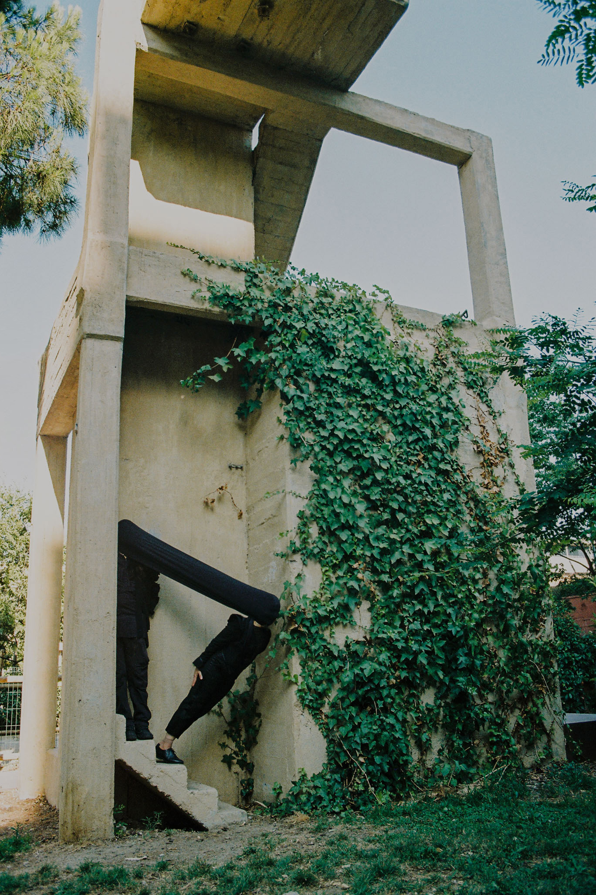

The name Terper refers to an old theatrical slang term for a dancer or performer, derived from Terpsichore, the Greek muse of dance. Like the name itself, the duo's work exists in constant motion, shifting between sound, sculpture, light and performance.
Formed by Paola Idrontino and RDMT, Terper creates immersive worlds where analogue synthesis, textile sculpture, reactive light and moving image become part of the same living ecosystem, blurring the boundaries between performance, installation and scenography, from their base in Barcelona.
Exploring themes of displacement, memory, transformation and the fragile relationship between humans and the natural world, every project is conceived as a dialogue between material and sound, where handmade processes coexist with digital technologies, and organic forms intertwine with electronic composition.
Our work has been exhibited in MACBA, Ket Galeria, Centre d'Artesania de Catalunya, Konvent Zero, Espronceda, Espai Niu, Sala VOL, Centre Cívic de Barceloneta, Zilzal Sonic Ceremony, A Love Supreme Festival, & NEST Festival.
